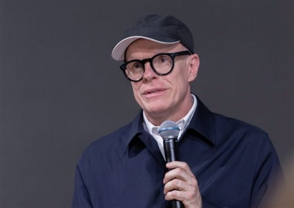
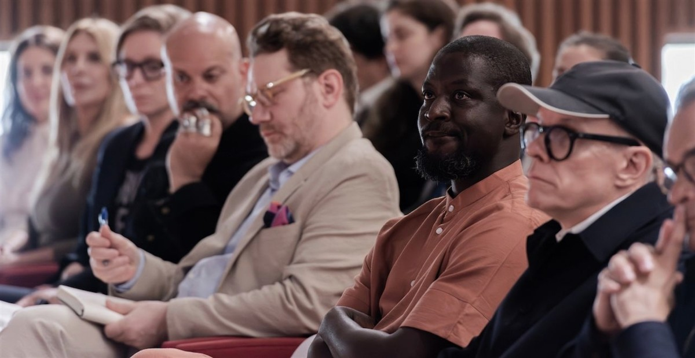
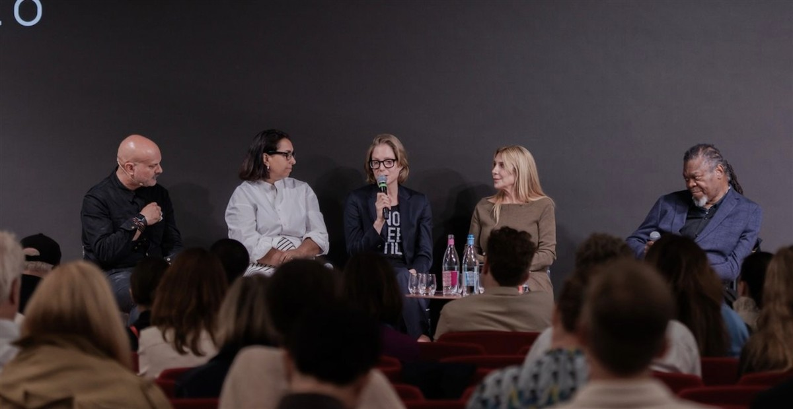
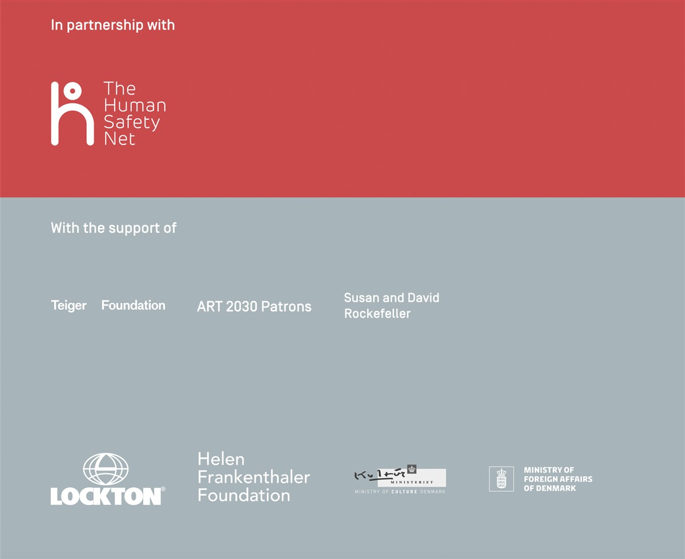

2026
ON SOURCE: ART 2030
Related Global Goals. All goals.
The Hope Forum 2026
The Hope Forum 2026. Courtesy of ART 2030.
The Hope Forum is ART 2030’s bi-annual, high-impact convening held alongside the Venice Biennale, bringing together leaders from art, science, business, philanthropy, and policy to advance the UN Sustainable Development Goals (SDGs).
The 2026 edition, Archipelagos of Hope, took place on 9 May 2026 at The Home of The Human Safety Net in Venice, amplifying global conversations on sustainability by mobilising the international art sector. Held in parallel with the opening of In Minor Keys, the 61st International Art Exhibition of La Biennale di Venezia, The Hope Forum welcomed visionary speakers, partners, and supporters to reflect on the moment we are living in — and the future we can shape together.
Centred on the idea of building bridges and bringing different perspectives together, Archipelagos of Hope explored how collaboration across disciplines, sectors, and geographies can help shape more sustainable futures. What emerged was a growing network of connections and possibilities already in motion.
Highlights from The Hope Forum 2026: Archipelagos of Hope. Video courtesy of ART 2030.
Featured Speakers
Amalia Amoedo, Philanthropist & Founder, Fundación Ama Amoedo
Laura Bardier, Executive Director, James Howell Foundation
Dr. Bettina Kames, CEO and Co-Founder, LAS Art Foundation
Melissa Fleming, Under-Secretary-General for Global Communications, United Nations
Ibrahim Mahama, Artist
Nader Mousavizadeh, Founding Partner & CEO, Macro Advisory Partners
Shirin Neshat, Artist
Hans Ulrich Obrist, Artistic Director, Serpentine
Mark Rappolt, Editor-in-Chief, ArtReview
Yinka Shonibare, Artist
Nancy Spector, Independent Curator
James Merle Thomas, Deputy Director, Helen Frankenthaler Foundation
Lindita Xhaferi-Salihu, Manager, Communications and Engagement division, United Nations Framework Convention on Climate Change (UNFCCC)
Pre-recorded opening remarks by Melissa Fleming, United Nations Under-Secretary-General for Global Communications, at The Hope Forum 2026.
Archipelagos of Hope

Hans Ulrich Obrist, Artistic Director of Serpentine, at The Hope Forum 2026. Courtesy of ART 2030.
Édouard Glissant, a key 20th-century thinker, described the archipelago as a cluster of islands in which each retains its distinct identity while continuously shaping one another through relation and exchange. His vision of a decentralized, interconnected world feels especially urgent amid today’s planetary crises.
Echoing Glissant’s archipelagic thinking, art holds the power to reconfigure how we understand and inhabit reality. The Hope Forum 2026 positions art as a bridge - connecting voices across disciplines, geographies, and divides at a time of increasing fragmentation.

The Hope Forum 2026. Courtesy of ART 2030.
The Hope Forum 2026. Courtesy of ART 2030.
ON SOURCE: ART 2030